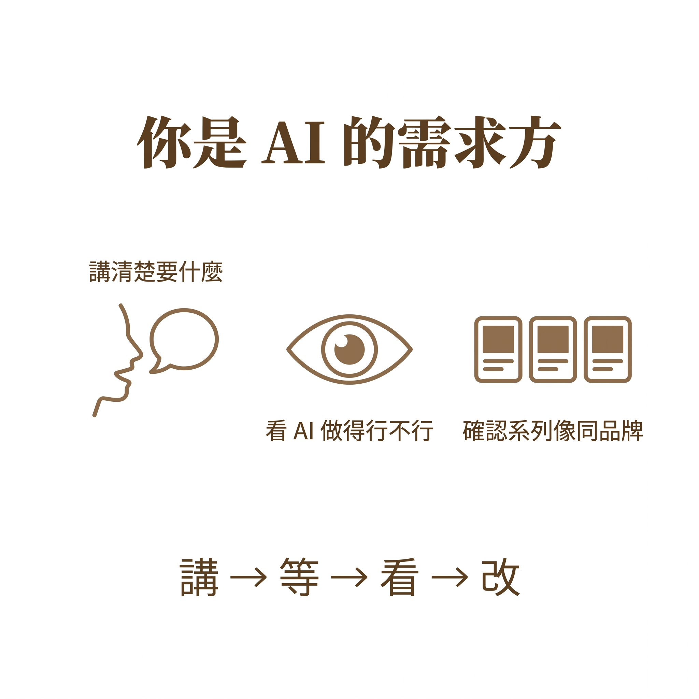

你不是設計師、你是 AI 的需求方
跟 AI 工作，你要做的 3 件事：講清楚要什麼、看 AI 做得行不行、確認系列像同品牌。學會「講 → 等 → 看 → 改」4 步流程，取代主觀感覺迴圈。時間：30 分鐘
- 1 個你過去工作有過的「需求方角色」例子（30 字、不必寫到完美）
- 1 段「講 → 等 → 看 → 改」4 步流程的應用情境描述
- 1 句「下次跟 AI 講需求時、我會先做的 1 件事」
完成這 3 件就算過關。本單元是觀念建立、不需要跑 AI。
開場情境：模糊指令的慘敗
週日晚上，弄一下咖啡工作室老闆準備做春季抹茶拿鐵的 IG 廣告。
他打開 Gemini 下了一句：「幫我做一張好看的咖啡店廣告」。
AI 吐出一張圖——構圖隨便、配色亂湊、字體怪異。
他修了：「再漂亮一點」。AI 又吐一張，還是不對。他修到第 10 張，放棄。
本課要教你另一種身份：你不是設計師，你是 AI 的需求方。
需求方不畫設計、需求方下需求；需求方不判斷好不好看、需求方判斷結構對不對、能不能繼承、是否守在品牌內。
3 個「你以為要會設計、其實早就是需求方」的時刻
用你自己的工作經驗做對照，察覺「需求方思維」其實早已存在於你的日常，只是沒意識到。
針對這個場景回答以下問題：
| 問題 | 你當時做了什麼？ |
|---|---|
| A. 有沒有釐清「要什麼」「不要什麼」「誰看」「何時交」？ | （填入回答） |
| B. 拿到作品後，你怎麼判斷是「可以交」還是「要重做」？ | （填入回答） |
| C. 若要重做，你怎麼給出具體修正方向（不是「再好看一點」）？ | （填入回答） |
| D. 若要做第二張、第三張同系列，你怎麼保持風格一致？ | （填入回答） |
| 你做的事 | 對應角色 |
|---|---|
| A（要什麼 / 不要什麼 / 誰看 / 何時交） | 講清楚要什麼的人 |
| B（判斷可以交 / 要重做） | 看 AI 做得行不行的人 |
| C（給出具體修正方向） | 看 AI 做得行不行的人（延伸） |
| D（保持系列一致） | 確認系列像同品牌的人 |
本段結論（老師帶 30 秒）：
- 你不是設計師、也不用變成設計師
- 你是 AI 的需求方
- 跟 AI 工作的 3 件事：講清楚要什麼的人 + 看 AI 做得行不行的人 + 確認系列像同品牌的人
- 本課教你的不是「畫設計」，是「下對需求 → 驗收 AI 產出 → 滾出可繼承骨架 → 讓 AI 守在品牌內」的完整協作流水線
兩種思維，兩條路
兩種思維差在哪？為什麼用錯思維會卡在主觀迴圈？
| 維度 | 設計師思維 | 需求方思維（本課教這個） |
|---|---|---|
| 主動作 | 自己畫 / 自己改 / 自己決定視覺 | 下需求 / 驗收 / 把關 / 迭代 |
| 核心能力 | 美感、技術、軟體操作 | 需求拆解、結構判讀、協作溝通 |
| 驗收標準 | 我覺得好不好看 | 結構是否對、是否可繼承、是否守在品牌內 |
| 修改方式 | 自己動手改 | 下具體修正指令給執行方（AI） |
| 產出規模 | 單張、高品質、慢 | 多張、穩定品質、可系列化 |
| 遇到不滿意 | 苦思美感、重新構圖 | 對照驗收清單找出具體問題、給指令 |
關鍵差異：
- 設計師主導視覺；需求方 主導需求與把關
- 設計師用眼睛判斷；需求方 用清單判斷
- 設計師追求單張極致；需求方 追求流程穩定
講 → 等 → 看 → 改
需求方跟 AI 協作的完整迴圈：講（需求）→ 等（執行）→ 看（驗收）→ 改（迭代）。
| 欄位 | 填什麼 |
|---|---|
| 業種 | 咖啡店 / 美妝 / App / 旅遊… |
| 商品 | 抹茶拿鐵、春季新品 |
| 客群 | 25-35 歲女性、注重生活風格 |
| 訴求 | 療癒、季節感、手作 |
| 必要元素 | 主標 / 副標 / 商品圖 / 價格 / 徽章 / CTA |
| 風格 preset | 日系 / 韓系 / 美式… |
- 不要一邊等產出一邊自己想「我應該怎麼做」——那是設計師思維的殘留
- AI 產出什麼你都要保持中立驗收，不預設「應該長這樣」
預期差異：AI 產出每次都不同。同 brief、同一人、不同時間跑出來會有差異。需求方的工作是拿到產出後判斷「能不能用」，不是預期「應該長什麼樣」。
- 結構檢查：8 項清單（商品位置、主標位置、徽章、CTA、3 特徵、配色、視覺動線、多餘元素）
- 線稿檢查：6 項清單（輪廓、色彩移除、佔位符、形狀一致、位置、風格像線稿骨架）
- 系列檢查：5 項清單（色票、字族、禁用、骨架、語氣）
3 件事在工作流的對應位置
本課工作流的三段，對應你要做的 3 件事：

| 工作流段 | 你要做的事 | 具體工作 |
|---|---|---|
| 起（M2，2h 生圖） | 講清楚要什麼的人 | brief 六件套、骨架選擇、風格 preset 選擇 |
| 承（M3，2h 線稿） | 看 AI 做得行不行的人 | AI 反推線稿骨架、判定是否可繼承 |
| 轉 / 合（M4-M5，3h 反控） | 確認系列像同品牌的人 | 品牌小卡 3 件事、系列一致性、品牌框架把關 |
接下來，你會輪流做這三件事。學會後你會發現：AI 不是你的競爭對手，是你的執行團隊。
活動：把最近一次「叫別人做事」的經驗結構化
從以下情境選一個（你最近真的做過的）：
- 叫設計師做一張海報 / banner
- 叫外包做一支短影音
- 叫同事做一份簡報
- 叫印刷廠印一批物料
- 或你最近一次「自己拼裝 IG 貼文」的經驗
表 1｜當初的需求判定（回憶，3 min）
| 欄位 | 你當初有沒有想清楚？ | 具體內容 |
|---|---|---|
| 要什麼結果？ | [ ] | （填入） |
| 不要什麼？（明確拒絕項） | [ ] | （填入） |
| 誰看？ | [ ] | （填入） |
| 何時交？ | [ ] | （填入） |
| 預算 / 資源限制？ | [ ] | （填入） |
| 成功的判準？ | [ ] | （填入） |
表 2｜驗收時你怎麼判斷的（回憶，3 min）
| 判斷方式 | 你當時用了哪個？（可多選） |
|---|---|
| 對照具體清單（事前列出） | [ ] |
| 靠感覺「還不錯 / 不太對」 | [ ] |
| 問別人「這樣可以嗎？」 | [ ] |
| 改到自己滿意為止，沒明確判準 | [ ] |
| 其他：__________ | [ ] |
反思（1 min）
看完兩張表，回答：
- 你哪幾個欄位當初其實沒想清楚？（很可能是「不要什麼」「成功判準」）
- 驗收時你有沒有靠清單？還是全靠感覺？
- 若用本課的 brief 六件套 + 驗收提問，哪些問題會被提早避免？
預期差異：你選的情境跟隔壁同學不會一樣——這是正常的。本練習沒有「標準答案」，只要能誠實回憶並找出「當初沒想清楚」的地方，就是對的輸出。需求方思維的起點就是承認自己有哪些地方沒想清楚。
- 選一個真實工作情境
- 填完需求判定 6 欄（至少能誠實打勾「有沒有想清楚」）
- 填完驗收方式勾選
- 能說出至少 1 個「當初沒想清楚、後來吃虧」的欄位
- 能說出「若用需求方的 4 步流程，會差在哪」
三個你很可能會踩的雷
未達 3 項結構化條件時，不按送出。花 2 分鐘補齊，比跑 10 次猜猜樂省時間。
關鍵心法：「驗收是結構判斷、不是美感判斷」。美感判斷讓設計師去做，需求方做結構判斷。
講清楚階段：給 brief（六件套）、給 AI
驗收階段：丟結構檢查給 AI，讓 AI 自己回答清單
修改階段：給「保留什麼 + 修什麼」的具體指令
系列階段：給品牌小卡讓 AI 自我把關一致性
AI 能做的遠比「產圖」多。你作為需求方的任務是充分使用 AI 的協作能力，而不只是當成自動販賣機。
確認你已建立需求方思維的基礎認知
能命中以下 3 點以上即通過：
- 主動作：設計師自己畫，需求方下需求讓 AI 執行
- 驗收標準：設計師用「好不好看」主觀判斷，需求方用「結構清單」客觀判斷
- 修改方式：設計師自己動手改，需求方下具體修正指令（保留 X / 修 Y）
- 產出規模：設計師追求單張極致，需求方追求流程穩定 + 可系列化
- 核心能力：設計師靠美感 + 技術，需求方靠需求拆解 + 結構判讀
- （加分）協作心態：設計師把 AI 當工具，需求方把 AI 當執行團隊
不及格的答案（確認自己沒有這些）
對照以下要點檢查你的答案：
- 第一步：對照 brief 六件套——這張圖是否達成當初需求？業種 / 商品 / 客群 / 訴求 / 必要元素 / 風格 preset 六項各自到位嗎？
- 第二步：結構清單驗收——用結構檢查（8 項）丟回給 AI，讓 AI 自己打勾
- 第三步：評估達標率——若 ≥ 6/8 可以收；若 < 6/8 必須修改
- 第四步：若需修改，給具體指令——保留通過的 X 項、只修不通過的 Y 項；指令要具體到「第幾項不符、應該改成什麼」
- （加分）第五步：進入系列階段時，對照品牌小卡——檢查配色 / 字族 / 禁用清單 / 語氣是否都在品牌框架內
加分答案：提醒老闆不要用眼睛驗收（會被 AI 高平均美感騙）；提醒老闆一張圖只要用 2 分鐘跑清單，比憑感覺猶豫 20 分鐘省時間；指出老闆的角色是「需求方不是設計師」——不用自己判斷好不好看，用清單判斷對不對。
不及格的答案（確認自己沒有這些）
本單元核心金句
這句話定義了你在本課的角色。你不學畫設計——你學怎麼講清楚要什麼、怎麼判斷 AI 做得行不行、怎麼確認系列像同品牌。後面 9 個單元都建立在這個認知之上。